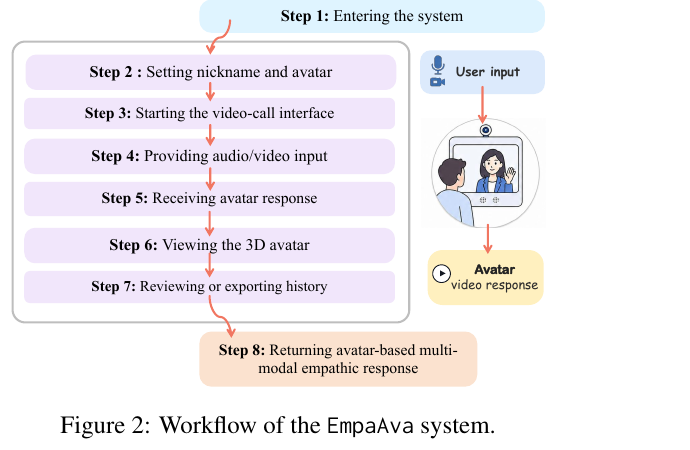
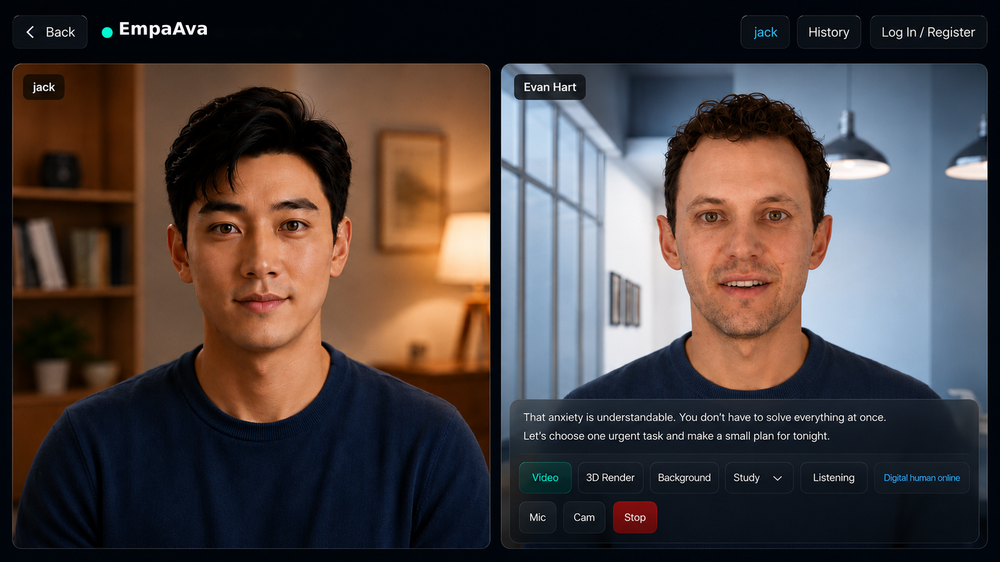

Multimodal Perception
PerceptionAgent converts raw audio-visual input into a structured percept with transcript, speech emotion, optional visual cues, dialogue history, and input metadata.
Paper Project Page
An open-source embodied empathetic chatbot that carries empathetic response generation from text-only exchanges into live, face-to-face interaction with photorealistic 3D avatars.
This paper presents EmpaAva, to our knowledge the first open-source, agentic 3D-avatar empathetic chatbot, which carries empathetic response generation from text-only exchanges into live, face-to-face interaction. Through a video-call-like interface, a user speaks to a 3D digital human that reads their affect from speech and optional vision, and replies with emotional speech, lip-synced facial motion, and photorealistic 3D Gaussian avatar rendering.
At its core, an LLM coordinates a Tri-Agent Architecture in which perception, empathetic response planning, and embodied rendering form a closed loop. A Response Planning layer compiles each LLM reply into an executable multimodal plan, aligning voice, expression, rendering, and avatar behavior with one empathetic intent.
Demonstration of a user speaking with EmpaAva through the booth UI.


PerceptionAgent converts raw audio-visual input into a structured percept with transcript, speech emotion, optional visual cues, dialogue history, and input metadata.
ResponseAgent reasons over the user state and emits a structured reply plan that specifies the text, emotion and tone, avatar, voice, background, and supporting evidence.
RenderAgent synthesizes emotional speech and predicts frame-level FLAME parameters for jaw, lips, head pose, and expression.
A FLAME-to-Gaussian transfer applies motion to a rigged 3D Gaussian avatar and renders the response in a realistic call scene.

Entry: visitors can join as guests, set a nickname, and choose a digital avatar with voice and background.
Talking: microphone and optional camera stay on while voice activity detection segments each utterance automatically.
Responding: the backend reads affect, plans an empathetic reply, and returns synchronized emotional speech and 3D avatar video.

Multi-turn examples show EmpaAva tracking academic stress, self-doubt, interpersonal conflict, and emotional invalidation while grounding each response in emotion, cause, and strategy.
Case 1: supportive response to a negative emotional cue.
Case 2: encouraging response with expressive avatar delivery.
@misc{empaava2026,
title = {EmpaAva: An Open-source Agentic 3D-Avatar Empathetic Live Chatbot},
author = {Yang, Jie and Xu, Wenhao and Lin, Shuhui and Fei, Hao},
year = {2026},
howpublished = {\url{https://1114531938.github.io/EmpaAva/}}
}